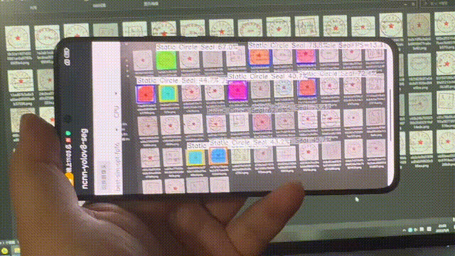
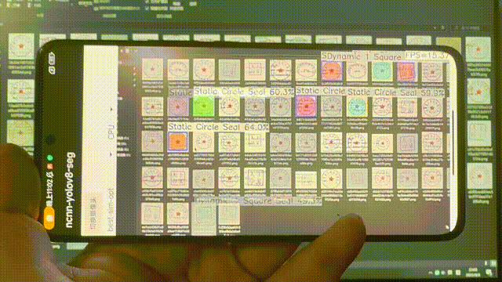

{kind=link}
{kind=link}
{kind=link}
{kind=link}
FP16 变体
- 界面选项
best-sim-opt-fp16- 资源文件
best-sim-opt-fp16.param+best-sim-opt-fp16.bin- 权重体积
- 6,532,564 字节（约 6.23 MiB）
- README 录屏
- fp16 cpu infer →
doc/fp16.gif
结果展示 · 非在线演示
这是 ncnn-android-yolov8-seg-Seal 的静态展示页。模型、相机与 ncnn 运行时都在 Android 设备上；本页不能、也不会在浏览器里跑网络。
On-device seal instance segmentation. This page is a results gallery, not an interactive demo.
01
两段 GIF 来自仓库 doc/，README「3 Screenshot」分别标注为 fp16 cpu infer 与 fp32 cpu infer。画面是手持手机拍摄显示器上的印章图；应用画出框、半透明掩膜和类别名。
README：fp16 cpu infer · 文件 doc/fp16.gif

源文件 16,686,667 字节。点击后按需加载，避免页面默认拉取两段大图。
README：fp32 cpu infer · 文件 doc/fp32.gif

源文件 17,251,546 字节。无 JavaScript 时可通过下方链接直接打开原 GIF。
02
下面只对照资源名、界面选项和 README 标注。源码没有比较二者快慢或谁更准，本页也不补这一笔。
best-sim-opt-fp16best-sim-opt-fp16.param + best-sim-opt-fp16.bindoc/fp16.gifbest-sim-optbest-sim-opt.param + best-sim-opt.bindoc/fp32.gifyolov8ncnn.cpp：按 spinner 下标选择 best-sim-opt-fp16 或 best-sim-opt，再读 {name}.param / {name}.bin。strings.xml）提供这两个模型名，以及 CPU / GPU 后端开关。NCNN_VULKAN 时设置 use_vulkan_compute；若选择 GPU 但 get_gpu_count() == 0，模型指针会被清空。03
推断链写在 ndkcamera、yolov8ncnn.cpp 与 yolo.cpp。下列数字均来自默认参数或常量，不是评测报告。
camera2ndk + mediandk）。README：使用 NDK 相机以追求效率；过旧设备若缺少 HAL3 可能崩溃。
target_size = 640 等比缩放，再 pad 到 32 的倍数（MAX_STRIDE）。PIXEL_RGB2BGR，均值按 0 减，归一化为 1/255。
images。输出 output0（检测）与 output1（mask proto）。param 文件与 JNI 抽取名称一致。
8, 16, 32；num_class = 11；DFL reg_max = 16；mask 特征 32 维。默认 prob_threshold = 0.4，nms_threshold = 0.5。
decode_mask：特征与 proto 做 MatMul → Sigmoid → Reshape → 去 pad → 4× 上采样到原图。绘制时掩膜阈值 0.5。
字符串原样取自 Yolo::draw。中文是对照翻译，不是另一套标签。
Static Circle Seal静态圆形印章Dynamic 1 Triangle Seal动态单三角印章Dynamic 1 Circle Seal动态单圆印章Dynamic 2 Circle Seal动态双圆印章Dynamic 1 Elliptical Seal动态单椭圆印章Dynamic 1 Square Seal动态单方形印章Dynamic 2 Square Seal动态双方形印章Static Elliptical Seal静态椭圆印章Dynamic Lozenge Seal动态菱形印章Static Square Seal静态方形印章Dynamic 2 Triangle Seal动态双三角印章04
摘自「2 Some notes」，不改原意。
05
完整步骤见 仓库 README。这里只列 CMake 与构建文件里写明的依赖。
ncnn-20221128-android-vulkan、opencv-mobile-4.6.0-android。com.tencent.yolov8ncnn，界面名 ncnn-yolov8-seg。app/build.gradle：minSdkVersion 24，ABI 仅 arm64-v8a。AndroidManifest 版本名 1.1，竖屏，申请 Camera 权限并声明 camera2.full。